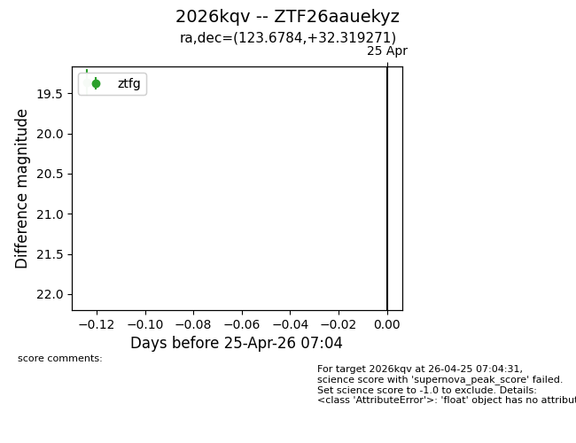
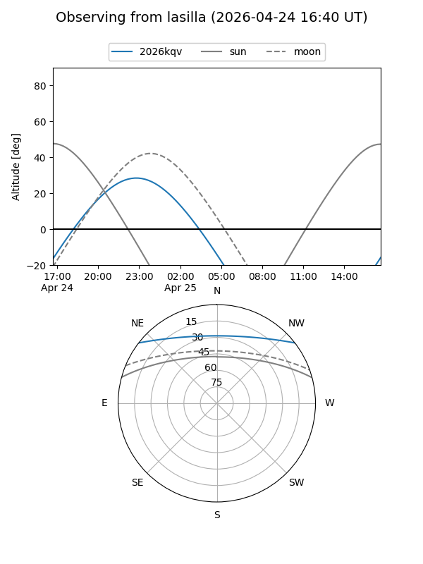
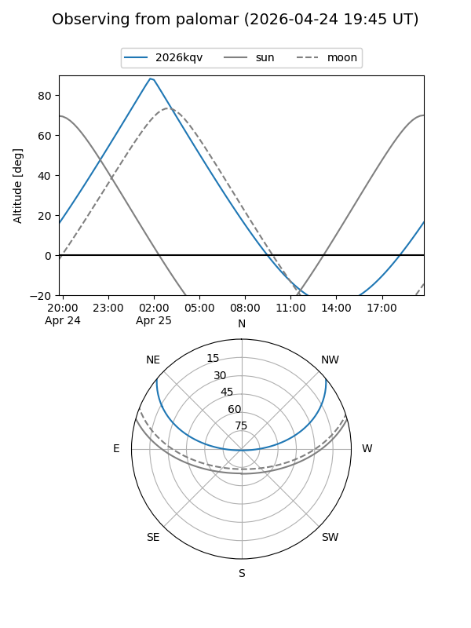

2026kqv
Target 2026kqv at 2026-04-25 07:06
Aliases and brokers:
FINK: link
Lasair: link
ALeRCE: link
TNS: link
YSE: link
alt names
ZTF26aauekyz (ztf,fink_ztf)
2026kqv (tns,yse)
Coordinates:
equatorial (ra, dec) = 123.6784,+32.31927
equatorial (HMS+DMS) = 08:14:42.82,+32:19:09.37
galactic (l, b) = (189.7130,+30.73703)
Flags:
Photometry:
last ztfg=19.37
1 ztfg detections
Lightcurve

Visibility


Additional plots